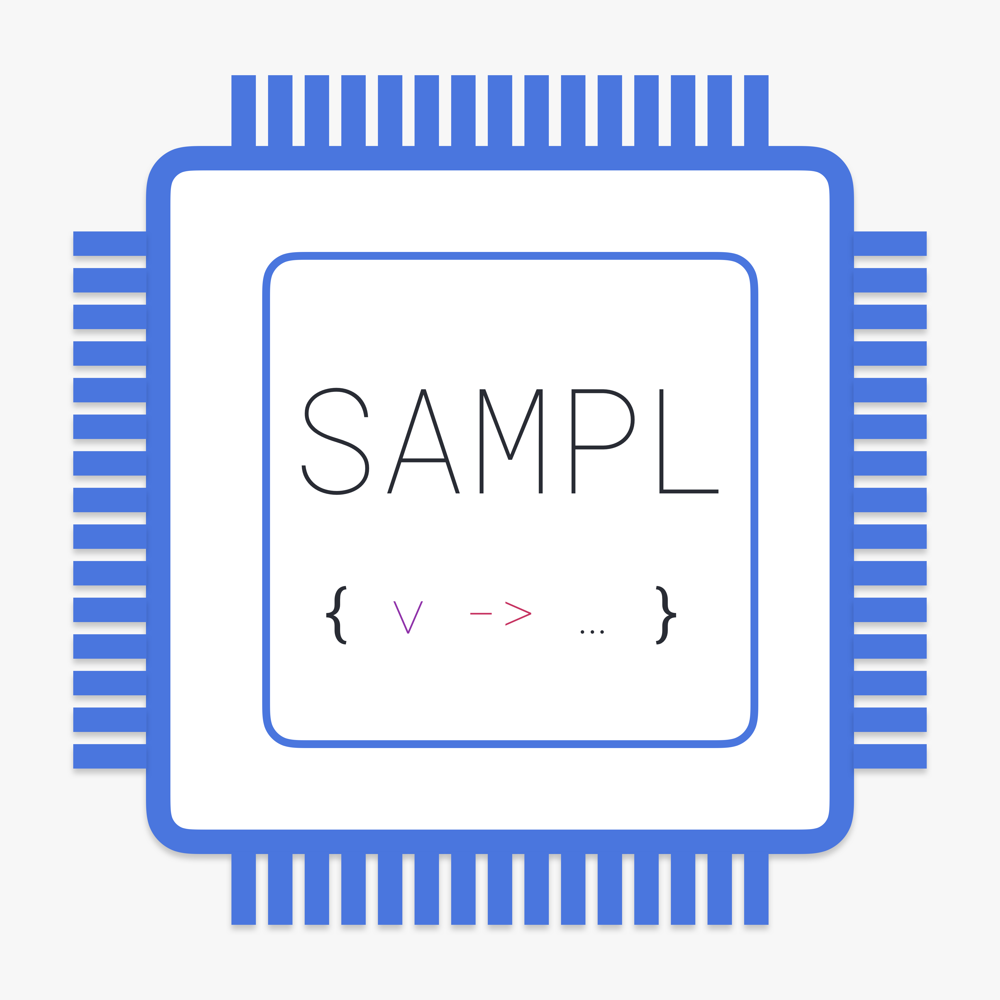
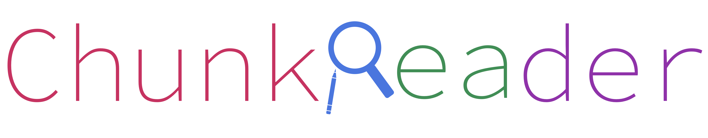
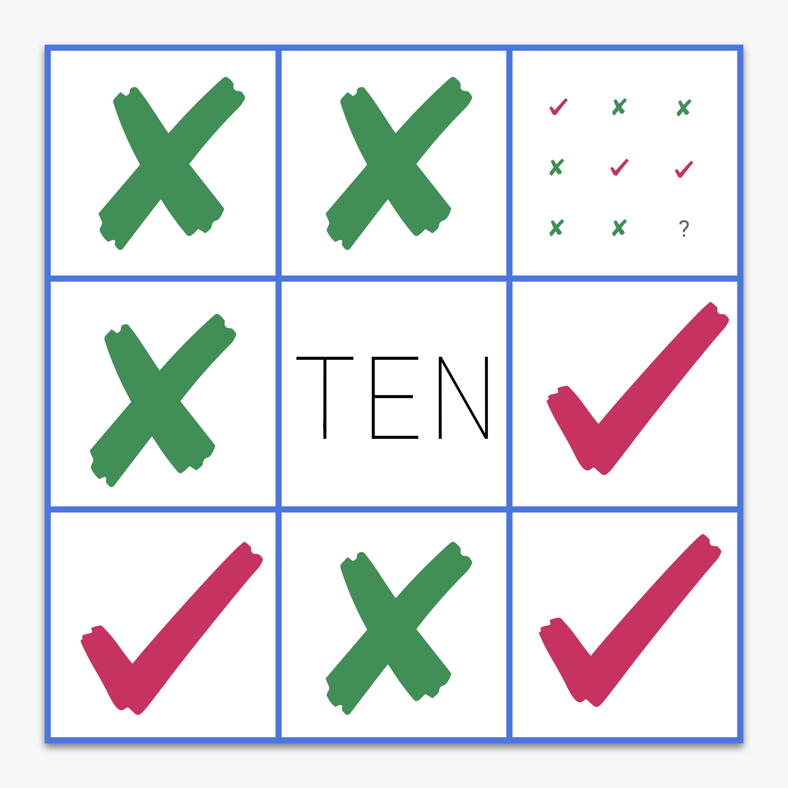
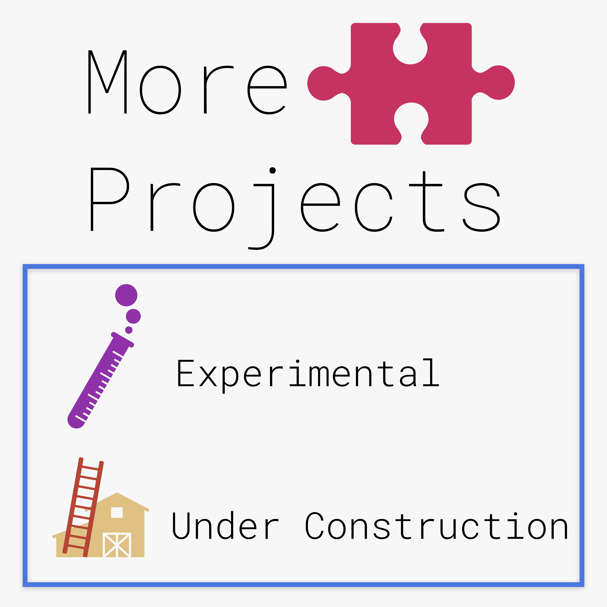

A manager and auto-scheduler for your projects and events.
Visit
A reader for subscribed RSS feeds. Source of my potential ML data.
Visit

A statically-typed functional programming language with basic type inference.
Visit

A service to extract key information and summary from text.
Visit

An interesting game with simple rules. Powered by an MCTS AI.
Visit

Other open source projects that are not hosted on this website.
See all of them
Student
Major in computer science at Cornell University.
GPA: 4.15/4.3
Researcher
Researched in machine learning and artificial intelligence.
Published paper about the application of neural networks.
Latest Paper